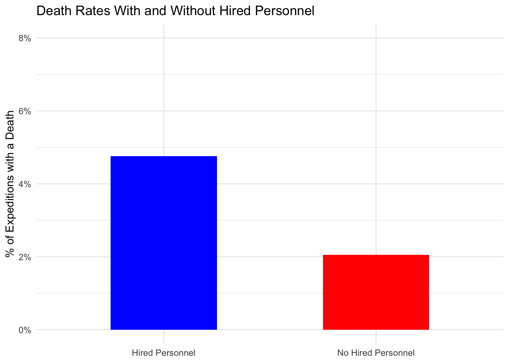
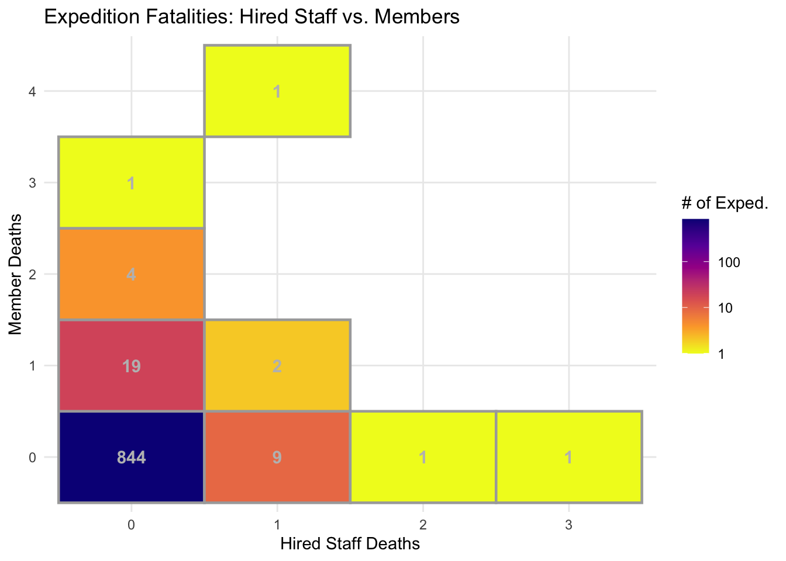
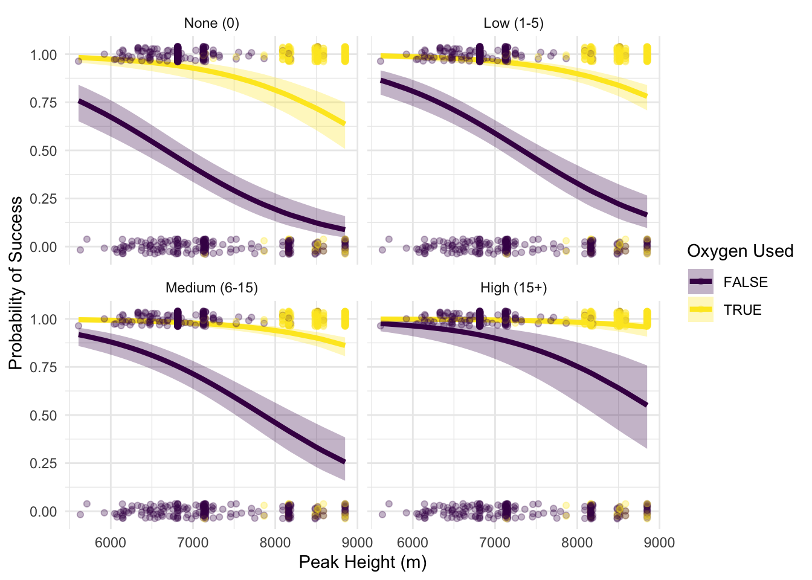

library(tidyverse)
exped_tidy <- readr::read_csv('https://raw.githubusercontent.com/rfordatascience/tidytuesday/main/data/2025/2025-01-21/exped_tidy.csv')
peaks_tidy <- readr::read_csv('https://raw.githubusercontent.com/rfordatascience/tidytuesday/main/data/2025/2025-01-21/peaks_tidy.csv')
# peaks_tidy$PKNAME
# mean(peaks_tidy$HEIGHTM)
# mean(peaks_tidy$HEIGHTF)Abstract
- The Himalayan Database is a detailed archive documenting mountaineering expeditions in the Himalayans. This data details the peaks, expeditions, climbing statuses, and geographic information of numerous Himalayan summits. I will explore these data in two tidy tibbles, making it easier to analyze trends in mountaineering expeditions, including seasonality, success rates, and national participation over time. To manage size, the expeditions file was filtered down to the recent years of 2020-2024.
Data Read
Expedition Deaths
- Are expeditions without hired personnel more dangerous?
hired_deaths <- exped_tidy |>
mutate(
any_death = (HDEATHS + MDEATHS) > 0,
hired_status = if_else(NOHIRED == TRUE, "No Hired Personnel", "Hired Personnel")
) |>
group_by(hired_status) |>
summarise(
total_expeditions = n(),
expeditions_with_death = sum(any_death, na.rm = TRUE),
death_rate = expeditions_with_death / total_expeditions
)
ggplot(hired_deaths, aes(x = hired_status, y = death_rate, fill = hired_status)) +
geom_col(width = 0.5, show.legend = FALSE) +
scale_y_continuous(
labels = scales::percent_format(),
limits = c(0, 0.08)
) +
scale_fill_manual(values = c("Hired Personnel" = "blue", "No Hired Personnel" = "red")) +
labs(
title = "Death Rates With and Without Hired Personnel",
x = NULL,
y = "% of Expeditions with a Death"
) +
theme_minimal()
# AI was used to figure out how to scale the y axis in percent format: Question - "What syntax do you use to add percents to y axis"- Expeditions with Hired Personnel have a death rate of 4.8%, which is more than double the 2.1% rate seen in expeditions with No Hired Personnel. However, there is a significant difference in the total number of expeditions between the two groups. There were 736 expeditions with hired staff compared to only 146 without. This suggests that the majority of expeditions rely on professional support. While the percentage is higher for hired expeditions, this does not necessarily mean hired staff make an expedition more dangerous, but rather it may display that hired personnel are typically used for more difficult, higher-altitude, or higher-risk peaks (like Everest) where self done expeditions might have lower risk.
Death Heatmaps
- Is there a correlation between the number of deaths among hired staff versus expedition members, and which group typically has a higher mortality?
deaths_df <- exped_tidy |>
group_by(HDEATHS, MDEATHS) |>
summarise(no_deaths = n(), .groups = "drop") |>
mutate(
HDEATHS = factor(HDEATHS),
MDEATHS = factor(MDEATHS)
)
ggplot(deaths_df, aes(x = HDEATHS, y = MDEATHS, fill = no_deaths)) +
geom_tile(colour = "darkgray", linewidth = 0.8) +
geom_text(aes(label = no_deaths), colour = "gray", fontface = "bold", size = 4) +
scale_fill_viridis_c(
option = "plasma",
direction = -1,
trans = "log10",
) +
labs(
title = "Expedition Fatalities: Hired Staff vs. Members",
x = "Hired Staff Deaths",
y = "Member Deaths",
fill = "# of Exped."
) +
theme_minimal()
# AI was used in this graph to add log scale. Question: How do I scale this down?The majority of expeditions (844 of 882) result in zero deaths of any kind. Deaths among hired staff and members tend to occur independently. Events with multiple fatalities involving both groups at the same time are extremely rare. Instead, they are usually isolated incidents involving one or two individuals, with expedition members appearing to die at a slightly higher rate in single death scenarios than the hired staff. This makes sense as the hired staff tends to be more prepared and experienced, however, accidents can still happen.
Joining the datasets for models
library(tidyverse)
model_df <- exped_tidy |>
left_join(peaks_tidy, by = "PEAKID") |>
mutate(
success_binary = factor(ifelse(SUCCESS1, "Success", "Failure")),
O2USED = factor(O2USED),
SEASON_FACTOR = factor(SEASON_FACTOR)
) |>
filter(!is.na(success_binary)) |> filter(!is.na(success_binary), !is.na(O2USED), !is.na(TOTHIRED)) |>
mutate(hired_cat = case_when(
TOTHIRED == 0 ~ "None (0)",
TOTHIRED <= 5 ~ "Low (1-5)",
TOTHIRED <= 15 ~ "Medium (6-15)",
TOTHIRED > 15 ~ "High (15+)"
),
hired_cat = fct_relevel(hired_cat, "None (0)", "Low (1-5)", "Medium (6-15)", "High (15+)"))Probability of Success Base of Hired No. Personel, Peak Height and Oxygen Use.
How does the probability of expedition success change as peak height increases, and to what extent do supplemental oxygen and different levels of hired support help the as mountains go to higher elevations?
library(tidyr)
library(broom)
library(ggeffects)
library(ggplot2)
success_glm <- glm(success_binary ~ HEIGHTM + O2USED + hired_cat,
family = "binomial",
data = model_df)
preds_success <- ggpredict(success_glm, terms = c("HEIGHTM [all]", "O2USED", "hired_cat")) |>
as.data.frame()ggplot(data = preds_success, aes(x = x, y = predicted)) +
geom_line(aes(colour = group), linewidth = 1.5) +
geom_ribbon(aes(ymin = conf.low, ymax = conf.high, fill = group), alpha = 0.3) +
geom_jitter(data = model_df,
aes(x = HEIGHTM, y = as.numeric(success_binary) - 1, colour = O2USED),
width = 0, height = 0.04, alpha = 0.3) +
facet_wrap(~ facet) +
scale_colour_viridis_d() +
scale_fill_viridis_d() +
theme_minimal() +
labs(x = "Peak Height (m)", y = "Probability of Success", colour = "Oxygen Used", fill = "Oxygen Used")
In every scenario, the probability of success drops as Peak Height increases. This drop is most apparent for climbers not using supplemental oxygen (the dark purple lines). Comparing the four facets, None (0), Low (1-5), Medium (6-15), and High (15+), shows that increasing the number of hired personnel flattens the curve going down. It is interesting to point out that with High (15+) hired support, those not using oxygen still have a higher success rate at around 8,000 meters than those with no support at the same height. Generally speaking the gap between oxygen users and non users only really becomes a critical point as expeditions move into the death zone (above 7,500–8,000 meters).
GLM Probability of Success
- When accounting for geography, equipment, staffing, and timing, what are the main drivers of mountaineering success, and which predictors show the greatest risk of failure?
success_glm <- glm(success_binary ~ HEIGHTM + O2USED + hired_cat + SEASON_FACTOR + TOTMEMBERS,
family = "binomial",
data = model_df)
print(success_glm)
Call: glm(formula = success_binary ~ HEIGHTM + O2USED + hired_cat +
SEASON_FACTOR + TOTMEMBERS, family = "binomial", data = model_df)
Coefficients:
(Intercept) HEIGHTM O2USEDTRUE
6.827713 -0.001049 2.908885
hired_catLow (1-5) hired_catMedium (6-15) hired_catHigh (15+)
0.650175 0.993114 1.864657
SEASON_FACTORSpring SEASON_FACTORSummer SEASON_FACTORWinter
0.043211 0.151672 -0.717079
TOTMEMBERS
0.041194
Degrees of Freedom: 881 Total (i.e. Null); 872 Residual
Null Deviance: 1066
Residual Deviance: 837.4 AIC: 857.4Model Breakdown
Coefficients:
Peak Height (HEIGHTM): The coefficient is negative (-0.001049), which means for every additional meter of peak height, the log-odds of success decrease slightly, which makes sense.
Oxygen Use (O2USEDTRUE): The strongest positive predictor in the model (2.908885). Using supplemental oxygen increases the log-odds of reaching the summit compared to not using it, which makes sense.
Hired Support (hired_cat): All levels of hired support show positive coefficients relative to the baseline (None). The effect grows higher as more staff are added, Low is 0.65, Medium is 0.99, and High is 1.86.
Seasonality (SEASON_FACTOR):Spring (0.043) and Summer (0.15) have positive coefficients, indicating they are more favorable for success than the baseline (Autumn). Winter has a significant negative coefficient (-0.717), identifying it as the most difficult season for success. It is important to note that as previously mentioned summer season is not very popular for hiking which gives a false sense of success. In actuality, Autumn and Spring are the most popular hiking seasons due to their mild climates.
Team Size (TOTMEMBERS): This has a small positive coefficient (0.041), showing that larger teams may correlate with higher success rates.
Linear Model
- Among successful expeditions, which variables significantly increase or decrease the time required to reach the summit?
duration_df <- model_df %>%
filter(SUCCESS1 == TRUE, SMTDAYS > 0, SMTDAYS < 100)
duration_fit <- lm(SMTDAYS ~ HEIGHTM + CAMPS + ROPE + SEASON_FACTOR, data = duration_df)
duration_fit |> tidy()# A tibble: 7 × 5
term estimate std.error statistic p.value
<chr> <dbl> <dbl> <dbl> <dbl>
1 (Intercept) -25.0 6.16 -4.06 0.0000661
2 HEIGHTM 0.00421 0.000952 4.42 0.0000145
3 CAMPS 2.99 0.541 5.52 0.0000000862
4 ROPE -0.00472 0.00403 -1.17 0.243
5 SEASON_FACTORSpring 4.60 1.59 2.89 0.00416
6 SEASON_FACTORSummer -1.68 5.20 -0.324 0.746
7 SEASON_FACTORWinter 10.6 5.62 1.89 0.0601 Model Breakdown
Coefficients:
Height of Peak (HEIGHTM) 0.00421: For every 1,000 meters of additional height, the expedition duration increases by about 4.2 days. This is statistically highly significant with a high p value.
Number of Camps (CAMPS) 2.99: Each additional camp established above base camp adds approximately 3 days to the total expedition time. This is probably for the time needed to transport supplies and acclimate at each new level.
Seasonality (SEASON_FACTOR): Spring: 4.60 days. Compared to the baseline (Autumn), successful Spring expeditions take about 4.6 days longer.
Seasonality (SEASON_FACTOR): Winter: 10.6 days. Compared to the baseline (Autumn), Winter successful climbs take significantly longer 11 extra days. The harsh conditions and limited visibility likely slow the progress.
Seasonality (SEASON_FACTOR): Summer: -1.68 days. This is not statistically significant (p=0.746), likely due to the small sample size for summer climbs mentioned in previous data.
Conclusion
My analysis of Himalayan mountaineering expeditions from 2020–2024 shows and revealed several clear patterns about what separates successful climbs from failed ones, and what makes these mountains so challenging.
Looking on what more I could do. A valuable extension of this work cou be to incorporate the full historical database rather than the 2020–2024 window, which would allow for long term analysis across decades of climbing history. It would also be worth exploring individual peak-level models, since grouping Everest and a 6,000m trekking peak into the same analysis likely hides important differences in what drives success at each level.
No matching items